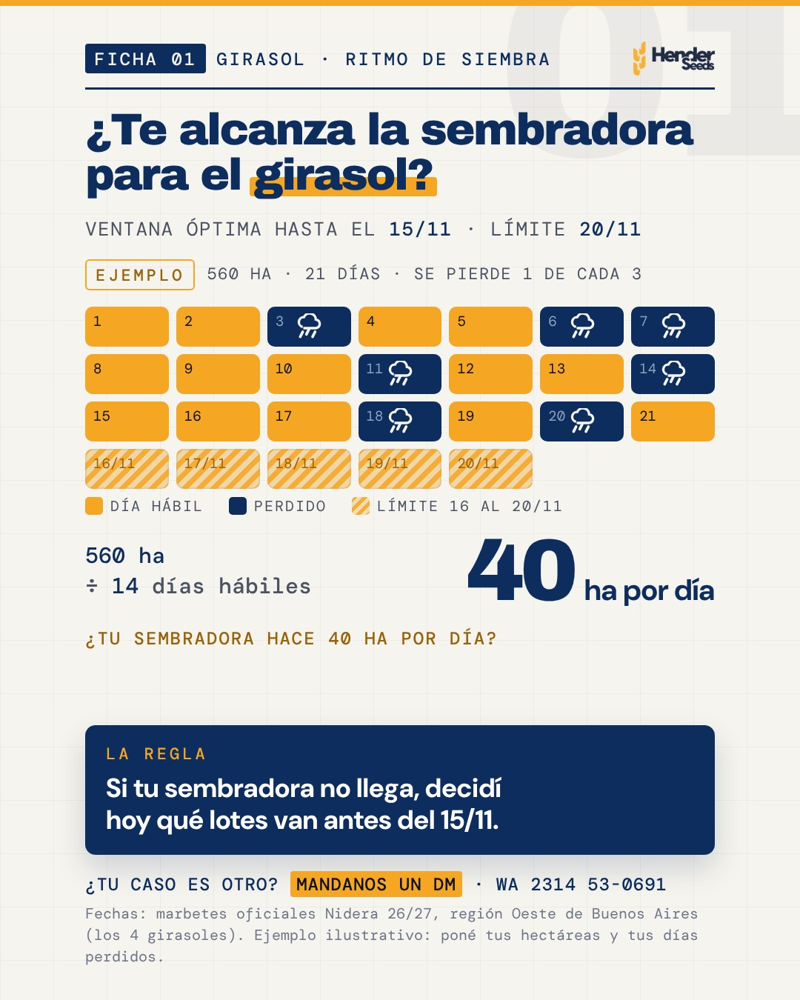

Ficha 01 · Girasol · ritmo de siembra
¿Te alcanza la sembradora para el girasol?

- En pantalla
- Calendario de días hábiles y la cuenta de hectáreas por día.
- Cuándo sirve
- Ahora: la ventana óptima del oeste cierra el 15/11. Sirve de nuevo después de cada lluvia.
- Se lleva
- Si tu sembradora no llega, decidí hoy qué lotes van antes del 15/11.
- Fuente
- Marbetes oficiales Nidera 26/27, Oeste de Buenos Aires (los 4 girasoles). Ejemplo rotulado: 560 ha ÷ 14 días hábiles = 40 ha por día.
Texto para publicar
¿Te alcanza la sembradora para el girasol? 🌻 En el oeste bonaerense la ventana óptima cierra el 15/11 y el límite es el 20/11 (marbetes Nidera 26/27). La cuenta es corta: hectáreas que te faltan ÷ días hábiles que quedan. Ejemplo: 560 ha y 21 días; si se pierde 1 de cada 3 por lluvia, piso o roturas, quedan 14 días hábiles: 40 ha por día. Si tu sembradora no llega a ese número, decidí hoy qué lotes van antes del 15/11. 📌 Guardala para rehacer la cuenta después de cada lluvia. Comentá FICHAS y te mandamos las 5 fichas de decisión por DM. ¿Tu caso es otro? Escribinos 📲 wa.me/5492314530691 #Henderseeds #Nidera #Girasol #Siembra2627 #Henderson #Daireaux #Bolivar #Agro